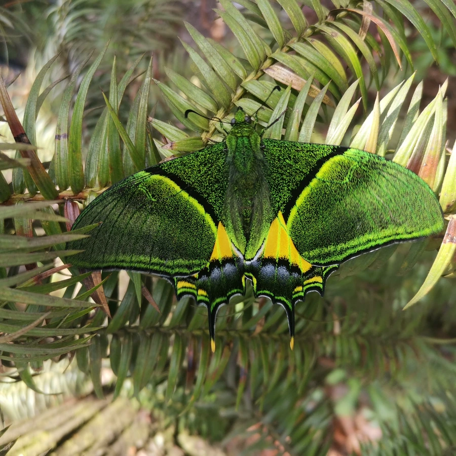

昆虫 · 动物界
金斑喙凤蝶 Teinopalpus aureus

中国最珍稀的蝴蝶之一，翅面有金色斑块和长尾突，仅分布于中国南方山地，被列为国家一级保护动物。
- 分类
- 门节肢动物门纲昆虫纲目鳞翅目科凤蝶科属喙凤蝶属
- 栖息环境
- 海拔较高的常绿阔叶林与山地林区，树冠层活动
- 地理分布
- 中国福建、广东、广西、海南、江西、浙江等地
- 保护级别
- 暂无评估；中国国家一级保护野生动物
物种志
金斑喙凤蝶翅展约 8–9 cm，雄蝶翅面黑褐色，前翅有一条金绿色斜带，后翅中央有鲜艳的金绿色斑块和细长尾突，尾突末端带金黄色；雌蝶体型更大，翅面斑纹更宽阔，色彩相对柔和。
它生活在海拔较高的常绿阔叶林和山地林区，成虫在春季出现，喜欢停在树冠层和花丛间，飞行迅速，较难观察。幼虫寄主植物尚无详细记录，推测取食木兰科等植物。金斑喙凤蝶是中国特有种，已知分布于福建、广东、广西、海南、江西、浙江等地，野外种群数量很少，被列为中国国家一级保护野生动物，非法捕猎和栖息地破坏是其面临的主要威胁。目前对其生态习性了解仍有限，它的存续依赖原始常绿阔叶林的保护。
形态与习性
- 食性成虫吸食花蜜；幼虫寄主尚不完全清楚
- 翅展约 8–9 cm
- 特征翅面有金绿色斑块和细长尾突
- 保护国家一级保护野生动物，禁止捕猎和贸易
- 分布中国南方山地，中国特有种
- 习性成虫春季出现，飞行迅速，多在树冠层活动
趣味知识
- 金斑喙凤蝶是中国国家一级保护野生动物，被誉为蝶中皇后。
- 它的后翅金绿色斑块在阳光下会泛出金属光泽，十分醒目。
- 由于种群稀少、行踪隐秘，野外观察记录一直很少。